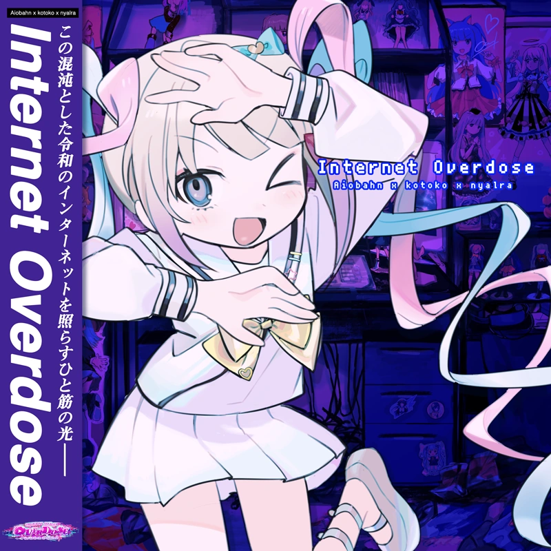

INTERNET OVERDOSE
Aiobahn 81 feat. KOTOKO
Believing and Being
Sister Marija (PEROPERO)
Say Fanfare!
Fubuki Shirakami
Koi no Moonlight
REDALiCE feat. 犬山たまき
Aiobahn 81 feat. KOTOKO
Sister Marija (PEROPERO)
Fubuki Shirakami
REDALiCE feat. 犬山たまき